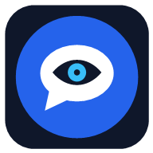

En Safari para iPhone o iPad, abre Compartir y elige Añadir a pantalla de inicio.
En otros navegadores, busca Instalar aplicación o Añadir a pantalla de inicio en el menú. En escritorio, revisa también la barra de direcciones. Si la opción no aparece, puedes seguir usando la aplicación en el navegador.